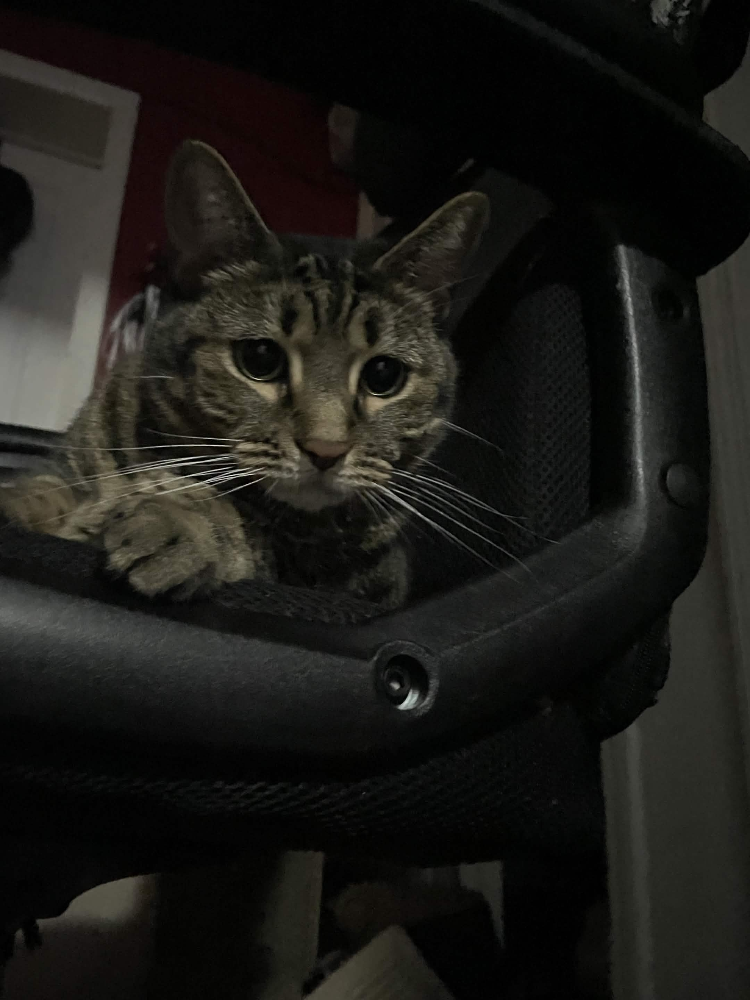
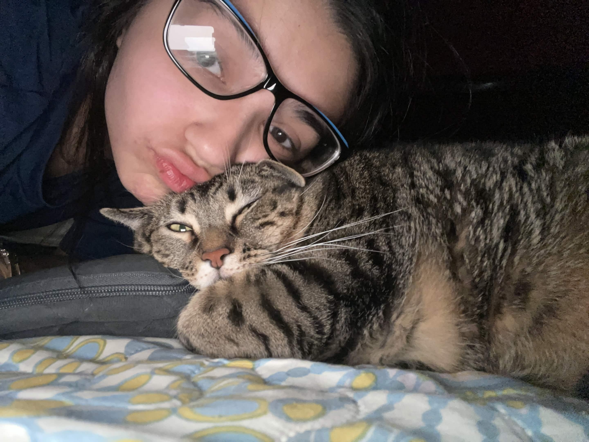
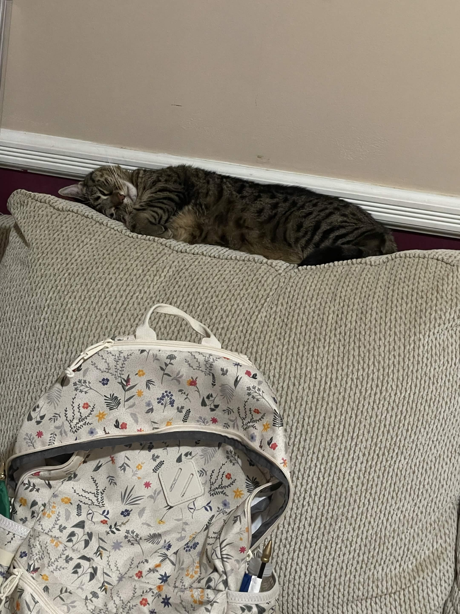

When I was around 9 or 10 years old, I was incredibly close with my neighbors. During the summer, I would always look out my bedroom window toward their backyard just to see what everyone was doing outside.
One afternoon in mid-August, I suddenly heard my neighbors yelling my name from outside. They had discovered two tiny newborn kittens hidden underneath their grill and had no idea what to do because they were allergic to cats. The kittens were extremely small and vulnerable, and I immediately felt worried for them.
I called my mom and begged her to let us help the kittens. Thankfully, she agreed. From that moment on, my older brothers and I took turns bottle-feeding them every two hours, even during the night. It was exhausting at times, but we were determined to keep them healthy and safe until they were old enough to eat on their own.
We eventually decided to keep one of the kittens and named her Ace. At first, we thought she was a boy, but after realizing she was actually a girl, the name stuck anyway. Over time, Ace became more than just a rescue cat — she became part of my family and one of the biggest reasons my love for rescuing animals continued to grow.
Ace Through the Years



“Saving one animal may not change the world, but for that one animal, their world changes forever.”